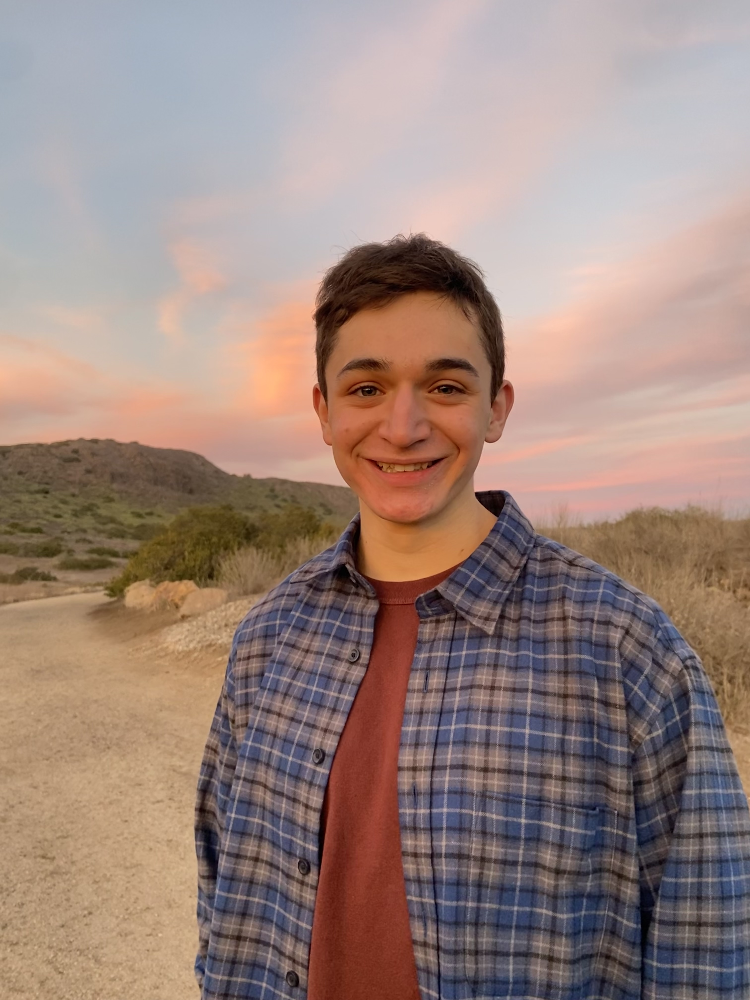

<div class="container" style="flex: 1 0 auto; display: flex; flex-direction: column; font-size: large;">
    <div style="display: flex; flex-direction: row; justify-content: flex-start;">
        <div id="bio" class='pull-left' style='flex-grow: 1; padding-right: 20px;'>
            <p> I work on machine learning at <a href="https://www.deshawresearch.com/">D.E. Shaw Research</a>. Previously, I completed my M.Eng. at <a href="https://www.csail.mit.edu/">MIT CSAIL</a>, working with <a href="https://people.csail.mit.edu/bjing/">Bowen Jing</a> and <a href="https://www.peterholderrieth.com/">Peter Holderrieth</a>, and supervised by <a href="https://people.csail.mit.edu/tommi/">Tommi Jaakkola</a>, and before that I completed an S.B. in mathematics and in computer science at MIT. If you're a generative modeling enjoyer, please check out our <a href="https://diffusion.csail.mit.edu/">class on flow-based generative modeling</a> :)</p>


            <p> I like to dance, cook, bike, <a href="https://www.goodreads.com/user/show/144083087-ezra-erives">read</a>, and
                follow construction
                projects in <a href="https://newyorkyimby.com/">New York</a> and <a href='https://archboston.com/community/forums/development-projects.20/'>Greater Boston</a>.
            </p>
        </div>
        <div id="picture" clas='pull-right' style='flex-grow: 1; padding-left: 20px;'>
             </img>
        </div>
    </div>
</div>
